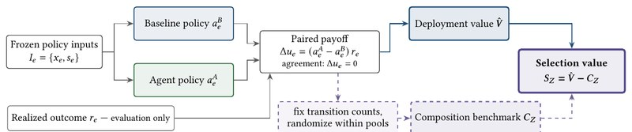
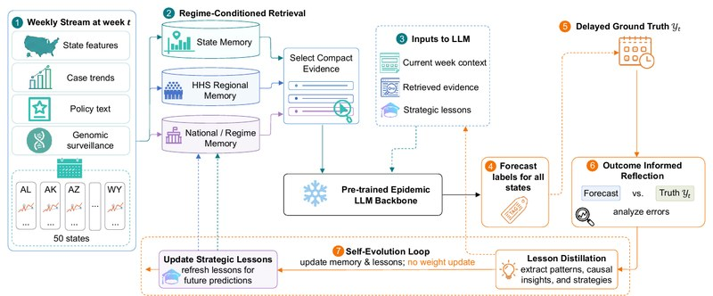
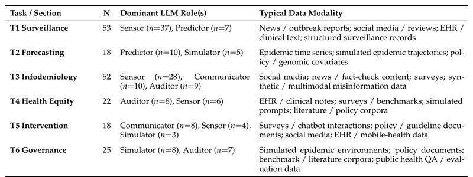
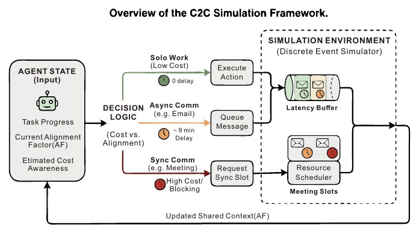
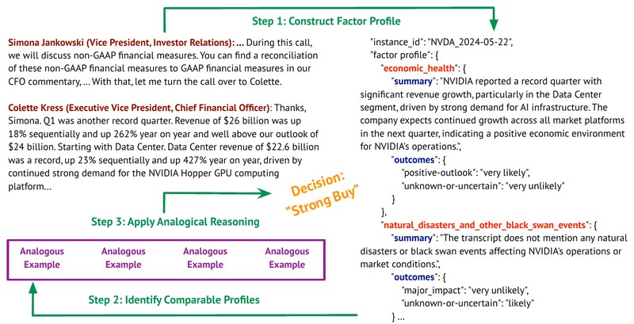
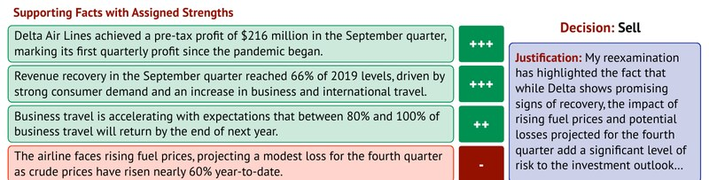
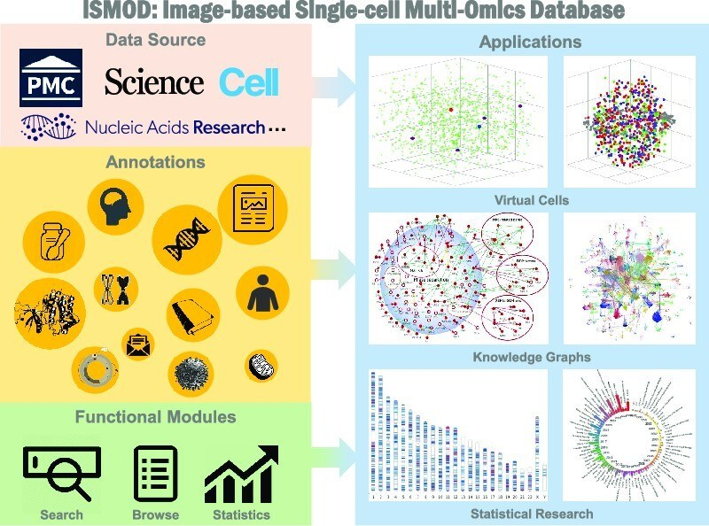
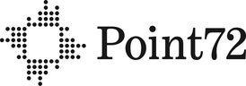

Sep 2026 – Dec 2026
Nokia, AI R&D Engineer Intern · Sunnyvale, CA
Self-evolving agents and skills: using agent execution traces to refine existing skills and distill new ones.
Yiming Lu
I am a fourth-year Ph.D. candidate in Computer Science at Emory University, advised by Prof. Wei Jin. I was previously advised by Prof. Fei Liu. Before Emory, I received my B.E. in Automation from Tsinghua University, where I worked with Prof. Jinli Suo on computational photography.
My research focuses on self-evolving LLM agents that improve from experience through memory, skills, and execution traces; multi-agent collaboration and communication; and LLM reasoning and decision-making in high-stakes domains such as finance and public health. I have interned at Nokia, Point72, and Zoom.
I am looking for internship opportunities in 2027, especially on LLM agents and reasoning. Feel free to reach out by email!
News
- Oct 2026Our paper Agent Policy-Value Audit was accepted to ICAIF 2026.
- Sep 2026Joined Nokia in Sunnyvale, CA as an AI R&D Engineer Intern, working on self-evolving agents and skills.
- Jun 2026Joined Point72 in New York City as an intern on the Internal Alpha Capture team.
- Jun 2026New preprint: EpiEvolve, self-evolving agents for streaming pandemic forecasting under regime shifts.
- Apr 2026New preprint: a survey and taxonomy of LLMs for public health.
- Oct 2025New preprint: Communication to Completion (C2C), cost-aware communication for multi-agent teams.
- Jun 2025Joined Zoom in Bellevue, WA as a Research Intern on the GenAI team.
- May 2025DeFine was accepted to Findings of ACL 2025.
- Jan 2025STRUX was accepted to NAACL 2025.
- Sep 2023iSMOD was published in Nucleic Acids Research.
- Aug 2023Started my Ph.D. at Emory University.
Publications
* denotes equal contribution. Papers I led are highlighted.

Agent Policy-Value Audit: Separating Transition Composition from Event Selection in Financial LLM Agents
ICAIF, 2026
arXiv
An audit that splits a financial LLM agent's deployment value into composition and event-selection value. On 723 earnings events, the agent's apparent gain comes from composition, not selection.

EpiEvolve: Self-Evolving Agents for Streaming Pandemic Forecasting under Regime Shifts
arXiv preprint, 2026 (under review)
arXiv
A self-evolving agent that adapts a frozen LLM forecaster through hierarchical episodic memory and lesson distillation, with no parameter updates. It reaches 0.629 accuracy on weekly COVID-19 hospitalization forecasting (vs. 0.561 static, 0.325 CDC ensemble) and cuts post-shift recovery from 5 to 2 weeks.

Large Language Models at Population Scale: A Survey and Taxonomy of Public Health Applications
Preprint, 2026 (under review)
preprint
The first comprehensive survey of LLMs in public health, organized as a taxonomy of six public health tasks against five functional LLM roles.

Communication to Completion: Modeling Collaborative Workflows with Intelligent Multi-Agent Communication
arXiv preprint, 2025
arXiv
A multi-agent framework for cost-aware communication: agents decide when to work solo, message asynchronously, or meet. Reduces task completion time by 40% on realistic coding workflows.

DeFine: Enhancing LLM Decision-Making with Factor Profiles and Analogical Reasoning
Findings of ACL, 2025
paper
Builds probabilistic factor profiles from earnings calls and combines them with analogical reasoning over past cases to guide LLM decisions under uncertainty.

STRUX: An LLM for Decision-Making with Structured Explanations
NAACL, 2025
paper / code
Structured explanations (supporting and opposing facts with strengths) that make LLM decisions more accurate and transparent, evaluated on stock investment decisions from earnings call transcripts.

iSMOD: An Integrative Browser for Image-Based Single-Cell Multi-Omics Data
Nucleic Acids Research, 2023
paper
An integrative browser for image-based single-cell multi-omics data, built from studies across 20,000+ published papers.
Experience

Jun 2026 – Aug 2026
Point72, Intern, Internal Alpha Capture · New York, NY
LLM pipelines that turn unstructured analyst text into structured company KPIs and trading signals.
Jun 2025 – Aug 2025
Zoom, Research Intern, GenAI · Bellevue, WA
Cost-aware communication in LLM multi-agent teams; led to the first-author C2C paper.
Education
Aug 2023 – present
Emory University, Ph.D. in Computer Science
Advisors: Wei Jin; Fei Liu (2023 – 2026)
Aug 2019 – Jul 2023
Tsinghua University, B.E. in Automation
Teaching & Service
- Teaching Assistant, Emory University: CS 571 Natural Language Processing (Spring 2024, Fall 2024, Spring 2025); CS 534 Machine Learning
- Reviewer: KDD 2026 Workshop
- Poster presentation: STRUX at NAACL 2025